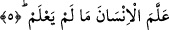
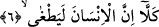

Allah insanoğluna, onu mertebelerin en aşağısından yâni kan pıhtısı mertebesinden alıp,
en yukarsına ilim öğrenme mertebesine getirmiş olmakla kendisine olan nimetini
hatırlatıyor. Öte yandan insanoğlunu hakîkî sûretinde yaratan Allah onu hubbi ilk tecelli
alakasından yaratmıştır. Nitekim bu sevgi tecellisi alakasına şu kudsi hadisle işâret
olunmuştur: “Ben gizli bir hazineydim ve bilinmek istedim. Ondan dolayı bütün
yaratıkları yarattım” [167] Böylece zâtî muhabbet sevgi icadı ile alaka hâline gelmiştir.
Allah kerem sahibleri içinde en keremli olanıdır. Çünkü o kereme delalet eden bütün
isimleri kendisinde bir araya getiren ve kuşatan varlıktır. el-Cevad, el-Vahib, el-Mu’ti,
er-Râzık vb. Allah’ın keremine delalet eden isimlerdendir.
5. İnsana bilmediklerini belleten(öğreten O’dur).
Bu ifâde Kur’an’ın dizilişine göre yukarda geçen “kalemle yazmayı öğreten”
ifâdesinden bedel-i iştimaldir. Bu ifâde aynı zamanda mef’ulü belirtmektedir. Buna göre
âyetin mânâsı şöyle olur; İnsana kalemle ve kalemsiz, asla hatırına gelmeyecek olan
gizli, açık, cüz’i ve külli bütün herşeyi belleten... demektir.
Burada şöyle bir soru akla gelebilir: “Kalem ve yazı Allah’ın insanoğluna vermiş
olduğu nimetlerden ise, o zaman neden Peygamber Efendimiz’e (s.a.) verilmedi de o
yazmayı bilmedi?”
Bu soruya cevap olarak şöyle diyebiliriz: Peygamber Efendimiz (s.a.) şâyet yazı
yazmayı bilseydi o zaman kâfirler diyeceklerdi ki: Muhammed Kur’an’ı öncekilerin
sayfalarından okudu ve yazdı.
En büyük kalem hizmetinde olan levh-i mahfuz, mushafı ve baktığı yer olan kimse bir
takım çizgileri çizmeye ve ilimleri cismânî alâmetlerle şekillendirmeye muhtaç değildir.
Çünkü yazı zihni bir sanat ve tabiî bir güçtür ve bu güç cismânî bir alet ile ortaya çıkar.
Bu âyet-i kerimede çok güzel bir işâret vardır. O da şudur: Peygamber Efendimiz’in
(s.a.) ümmeti diğer ümmetler içerisinde rûhânî bir ümmettir. Allah Teâlâ bu ümmeti
İncil’de vasfederken: “Muhammed ümmetinin incilleri kalplerinde olacaktır. Şâyet
yazı olmasaydı onlar Peygamber Efendimiz’in (s.a.) şeriatlerini, -kuvvetlerinin
kemalinden ve yeteneklerinin zuhûr etmiş olmasından dolayı kalplerinden
ezberleyeceklerdi.
6. Gerçek şu ki, insan azar.
Âyetin başında yer alan “kellâ” edatı, -âyette her ne kadar daha önce zikri geçmese